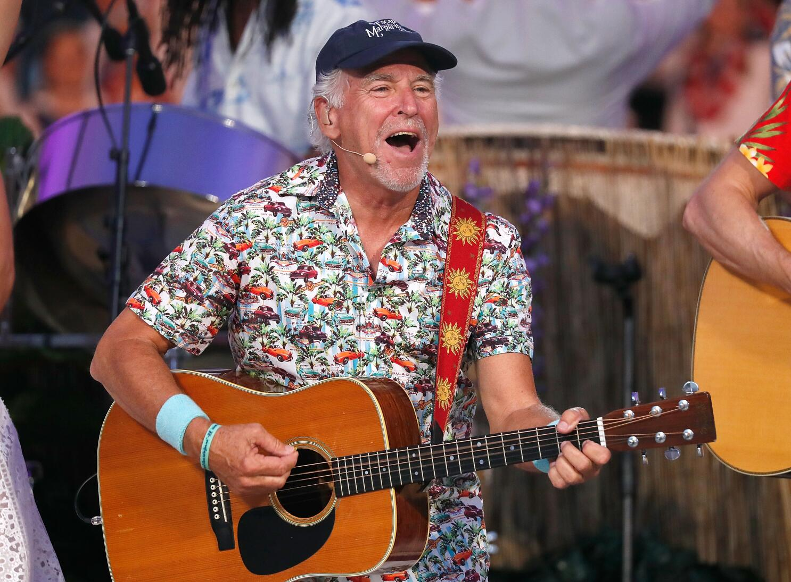
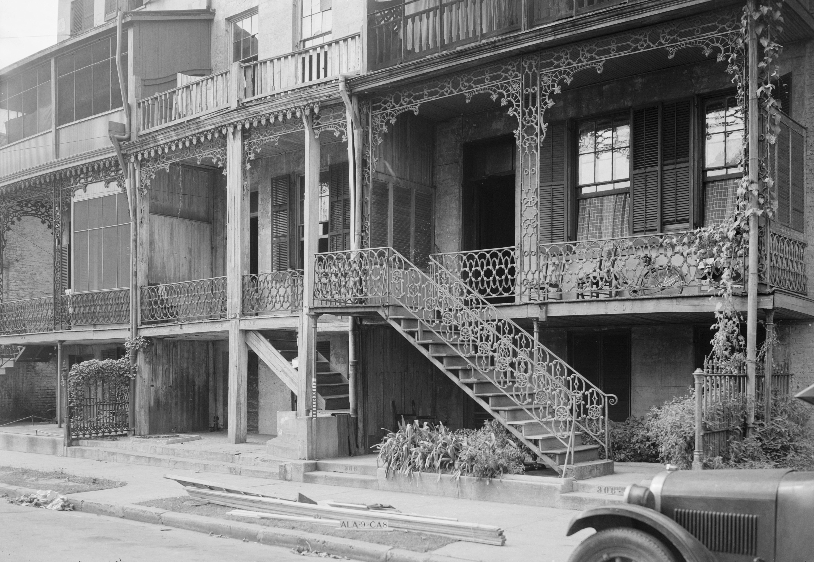

Mardi Gras
Did you know that Mobile is the birthplace of Mardi Gras in the United States? Dating back to 1703, the celebration in Mobile predates the more famous festivities in New Orleans. While New Orleans was the first to call it Mardi Gras, the French first celebrated it in Mobile, Alabama. Growing up, I attended parades every year with my grandparents, and still have a stockpile of Mardi Gras beads over a decade old!

Jimmy Buffett: A Mobile Legend
Mobile also happens to be the place where the legend himself, Jimmy Buffett, grew up. His father worked at our shipyards, which is what introduced Buffett to sailing and shipbuilding. He started playing guitar in the late 1960s, and would perform Admiral's Corner at the Admiral Semmes Hotel in downtown Mobile. After his passing, Mobile held a Son of a Sailor Fest this past August in celebration of his life and the impact he had.
Over 300 Years of History
Founded in 1702, Mobile has a rich history that reflects its diverse cultural heritage. Originally a French colony, the city later came under British, Spanish, and American control, leaving behind a blend of architectural styles and traditions. During the Civil War, Mobile was a strategic port and witnessed significant events like the Battle of Mobile Bay. Today, Mobile's historic districts, museums, and waterfront areas celebrate its storied past and vibrant present.
